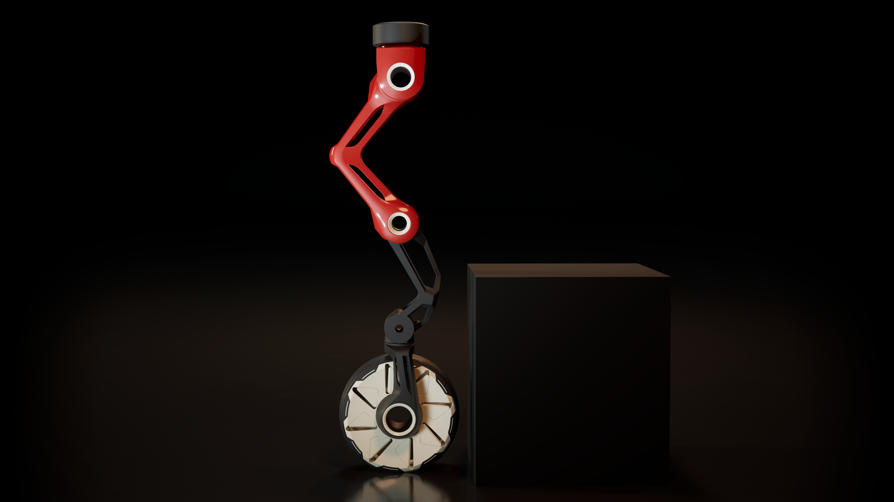

Slide to move leg
Slide to move leg
 Mammalian Pose
Mammalian PoseReptilian Pose
Mammalian ModeReptilian Mode

Slide to rotate model

Michell Truss

Slide to expand model
Mammalian Pose
Michell Truss